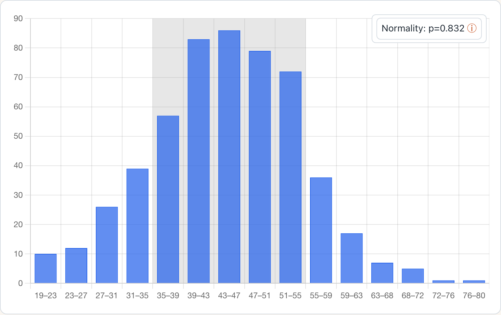

safety.viz
Nine classic clinical-safety graphics, rebuilt on one modern charting stack.
safety.viz consolidates the interactive safety displays of the safetyGraphics ecosystem — nine archived Rho, Inc. renderers built on decade-old Webcharts — into a single maintained Chart.js library: one bundle, a JSON-Schema data contract per chart, and requirement-traced test evidence behind every renderer.
It is built to be consumed from R: gsm.safety wraps this same bundle as Widget_* htmlwidgets, mirroring how gsm.kri consumes gsm.viz in the OpenRBQM ecosystem. If you review clinical-trial safety data — medical monitor, biostatistician, or data scientist — each migrated renderer ships with a live demo, an audit-style test-evidence report, and a generated API reference.
Available renderers 1 of 9 migrated

Safety Histogram
availableDistribution of a chosen lab or vital-sign measure with filters, grouping, normal-range overlay, and a linked participant listing.
Migration queue 8 to go
Each queued renderer already has a reviewed requirement matrix in safety.agent — the specification its migration will be built and tested against.
Safety Outlier Explorer
plannedParticipant-level results over time, highlighting outlying values against the study population.
Safety Results Over Time
plannedPopulation-level distribution of results at each study visit, with grouping and outlier context.
Safety Shift Plot
plannedBaseline versus comparison-visit values for a measure, flagging participants who shift across normal-range limits.
Safety Delta-Delta
plannedPaired change-from-baseline comparison of two measures on one scatter plot.
Paneled Outlier Explorer
plannedSmall-multiple outlier views across a panel of related measures.
Adverse Event Explorer
plannedHierarchical adverse-event incidence explorer with treatment-arm comparison and drill-down to participant detail.
Adverse Event Timelines
plannedParticipant-level adverse-event timelines by severity and onset relative to study start.
Web Codebook
plannedInteractive data codebook: variable-level summaries, distributions, and filters for any dataset.